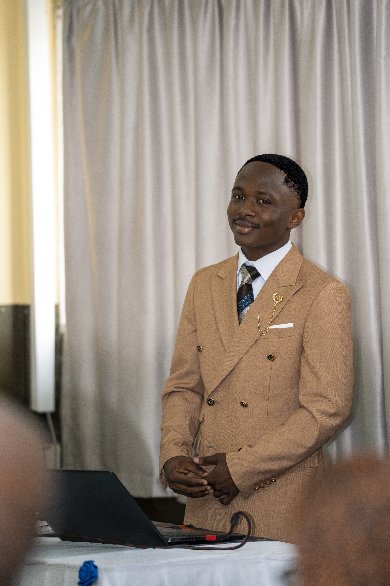

Routage & adressage IP
Étude et configuration du routage dynamique, de l’adressage et des échanges entre réseaux.
TCP/IPIPv4 / IPv6OSPFBGPSubnetting
Portfolio · Abidjan, Côte d’Ivoire
Réseaux informatiques · Télécommunications · IoT
Étudiant en Master 1 à l’ESATIC, je conçois et étudie des architectures réseau : routage, commutation, VLAN, interconnexion sécurisée et supervision. J’explore aussi les communications LoRa/LoRaWAN et les systèmes embarqués.

01 · Profil
Un parcours entre infrastructure réseau, objets connectés et projets d’innovation appliquée.
Après une Licence 3 Réseaux et Télécommunications obtenue avec la mention Très Bien, j’ai intégré le Master 1 de la même spécialité à l’ESATIC en septembre 2026.
Mes projets m’ont amené à travailler sur la collecte de données par capteurs, les liaisons longue portée, la supervision IoT et l’interconnexion sécurisée de réseaux. J’apprécie aussi le prototypage et la transmission des savoirs, notamment à travers des ateliers de robotique et de fabrication numérique.
Je cherche à approfondir mes compétences en réseaux et télécommunications tout en développant des solutions concrètes, adaptées aux contraintes du terrain.
02 · Expertise principale
Un socle de compétences construit en formation, en travaux pratiques et en stage : concevoir, configurer et diagnostiquer des infrastructures réseau.
Étude et configuration du routage dynamique, de l’adressage et des échanges entre réseaux.
Configuration et mise en pratique de réseaux locaux, du câblage à la segmentation logique.
Principes de filtrage, segmentation et tunnels sécurisés appliqués au projet d’interconnexion multi-sites NEXORA.
Surveillance des infrastructures et outils de diagnostic réseau étudiés en pratique.
Topologie schématique à visée pédagogique ; elle ne représente pas un réseau déployé.
03 · Sélection de projets
Projets académiques et prototypes : les réalisations sont décrites selon leur niveau d’avancement documenté.
Site pilote de Subiakro · Yamoussoukro
Conception d’une infrastructure IoT pour suivre les tours d’eau d’un périmètre rizicole. Le projet associe des nœuds de mesure et une supervision des données afin de faciliter le suivi de l’irrigation.
Solution de surveillance environnementale pensée pour les zones forestières isolées. Des nœuds à base d’ESP32 collectent des données de capteurs et les transmettent par LoRa vers un point de supervision et d’alerte.
Projet d’interconnexion sécurisée de sites du secteur judiciaire. L’architecture étudiée s’appuie sur la segmentation réseau, le filtrage et des tunnels VPN pour protéger les échanges entre infrastructures.
Prototype ESP32 de suivi de conditions agricoles, avec mesures d’humidité du sol et de température, et signalisation locale pour accompagner la gestion de l’irrigation.
Collecte locale de mesures issues de capteurs MQ-7 et MQ-135 connectés à un ESP32. Les données sont envoyées en JSON par HTTP vers un serveur PHP local, puis enregistrées avec horodatage.
Expérimentations de commande de systèmes électroniques et de moteurs avec un module HC-05, associées à une application mobile réalisée sous MIT App Inventor.
04 · Expérience & formation
Avril – août 2026
CASUR GROUP · Abidjan
Participation au déploiement d’infrastructures réseau, au câblage structuré, à la configuration d’équipements et à la maintenance des interconnexions.
Engagement STEM
HFABLAB / STEMLAB
Ateliers pratiques autour d’Arduino et d’ESP32, accompagnement en robotique, initiation à la conception 3D, à l’impression 3D et à la découpe laser.
05 · Autres expertises
Des savoir-faire mobilisés en appui aux projets réseau, à l’IoT et au prototypage.
ESP32, Heltec LoRa 32 V3, Arduino, LoRa/LoRaWAN, ChirpStack, MQTT, HC-05, capteurs.
Python, JavaScript, PHP, C/C++, React, Vite, Node.js, Express, Flutter, HTTP, JSON, CSV.
Fusion 360, SolidWorks, Inkscape, Proteus, impression 3D, découpe laser, prototypage électronique.
Git, Docker, Docker Compose, PlatformIO, VS Code, Linux, Packet Tracer.
06 · Distinctions
Une reconnaissance de l’approche d’équipe, de la conception et de l’innovation portée par ces projets.
ForestGuard · Surveillance environnementale par IoT et LoRa.
ForestGuard · Détection précoce des départs d’incendie.
NEXORA · Interconnexion sécurisée des infrastructures judiciaires.
Et maintenant ?
Ouvert aux échanges autour des réseaux, des télécommunications, de l’IoT et des opportunités professionnelles à Abidjan et au-delà.